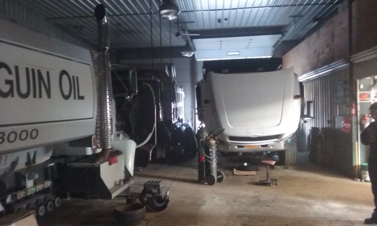

Our shop's heavy duty service, combined with our 20 plus years of experience will keep you rolling. As your experience in the heavy-duty trucking industry confirms, your business will always be greater when managed by a comprehensive range of services provided by passionate, caring truck professionals.
Factory Trained
- Cummins
- Caterpillar
- Eaton
- Road Ranger
- Waterous
- Hale Pumps
Money saving tip - Preventive maintenance can help avoid costly service calls and repairs. In addition to the mechanic's time, the driver may have had to pay for the service trucks mileage and any products used during the repair. These costs can really add up. Some breakdowns can be completely avoided by practicing regular preventive maintenance.
Restoring Your Rig?
Big rig restoration projects are more common than ever these days. Many truckers are leaning toward rebuilding and repairing their rigs, especially if the engine is ‘pre-emission’. This trend in the trucking industry, is a common reaction to the ever increasing equipment operating costs for the trucker. The purpose of a working class big rig truck, is to make money.

But, with the high cost of new equipment, DEF fluid, emissions equipment etc., combined with the mediocre pay rates, a large number of truckers are turning to repairing and restoring their present trucks, or restoring a classic big rig, to keep their costs down. Purchasing a new truck or being tied to a lease just isn’t an attractive or practical alternative for many. One of the best financial options for big rig owners, is to rebuild and restore thus the interest in older trucks once again. There are several reasons to consider restoring and rebuilding your present truck, rather than buying new, and taking on the stress of a long term commitment with a new truck.
Pros to restoring your rig:
- Simple Repairs -The older rigs are simple enough so that when they break down, they are repaired quickly.
- Predictability - Fuel mileage is more or less predictable as is engine life and thus operating costs.
- Reliability - Engines and transmissions that have been around for a long time, with good track records for longevity.
- Less Expensive to repair - The older trucks could be repaired quicker as they are not laden down with an overabundance of electrical components.
Check out some of our reviews:
John Weston
April 23, 2018 at 11:36 am
Truck Pro is a very good service. The service I received from them was great, they really helped me today. I would recommend Truck Pro to any Driver needing Roadside Assistance.
Derek McAlister
March 18, 2018 at 3:08 pm
The service I received was absolutely fantastic from Truck Pro, you guys are great!!!!!!!!!! I would 100% recommend Truck Pro to my friends. Thank you!